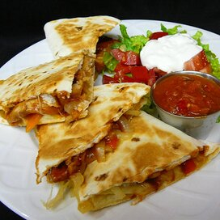

Texas Chicken Quesadillas

These are quesadillas filled with chicken cooked in barbeque sauce, caramelized onions, Cheddar and Monterey Jack.
Serve with plenty of guacamole, sour cream and chunky salsa!
Ingredients:
- 2 tablespoons vegetable oil, divided
- 1 onion, sliced into rings
- 1 tablespoon honey
- 2 skinless, boneless chicken breast halves - cut into strips
- ½ cup barbeque sauce
- ½ cup shredded sharp Cheddar cheese
- ½ cup shredded Monterey Jack cheese
- 8 (10 inch) flour tortillas
Ingredients:
- Preheat oven to 350 degrees F (175 degrees C).
- In a large, deep skillet, heat 1 tablespoon oil over medium high heat.
- Slowly cook and stir onion until translucent.
- Mix in honey.
- Stir until onion is golden brown, about 5 minutes.
- Remove from skillet and set aside.
- Place remaining oil and chicken in the skillet over medium high heat.
- Cook until chicken is no longer pink.
- Stir in barbeque sauce and evenly coat chicken.
- Layer 4 tortillas individually with chicken, onions, Cheddar cheese and Monterey Jack cheese.
- Top with remaining tortillas.
- One or two at a time, place layered tortillas on a large baking sheet.
- Bake uncovered in the preheated oven 20 minutes, or until cheese is melted. Do not let tortillas become too crisp.
- Remove from heat. Cut into quarters to serve.